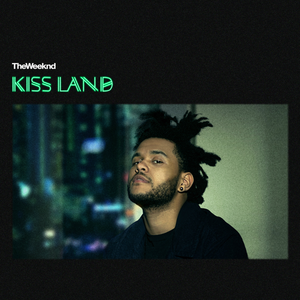
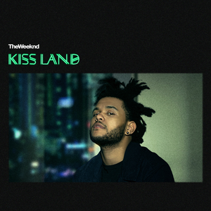
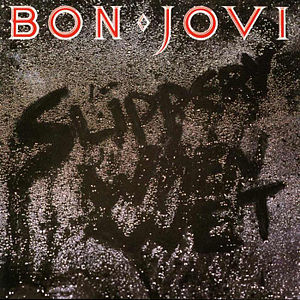
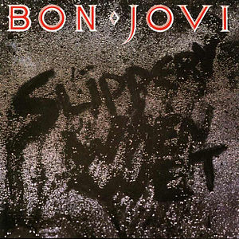
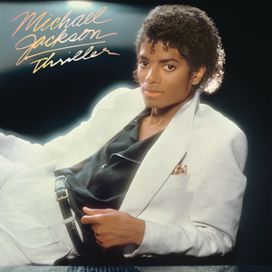
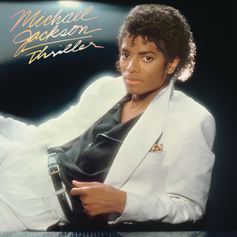

 

 



Music genres I listen to the most
POP
I always liked pop and there are many diffrent artist that I like: The Weeknd, Michael Jackson and Bruno Mars just to name a few.
HIP-HOP
I started listening to HIP-HOP in the last three years and some of artist that I like are: Post Malone, Kendrick Lamar, Kanye West, Juice WRLD...
ROCK
I've listened to rock ever since I was a baby and artist/bands I like are: AC/DC, Red Hot Chilli Peppers, Nirvana...